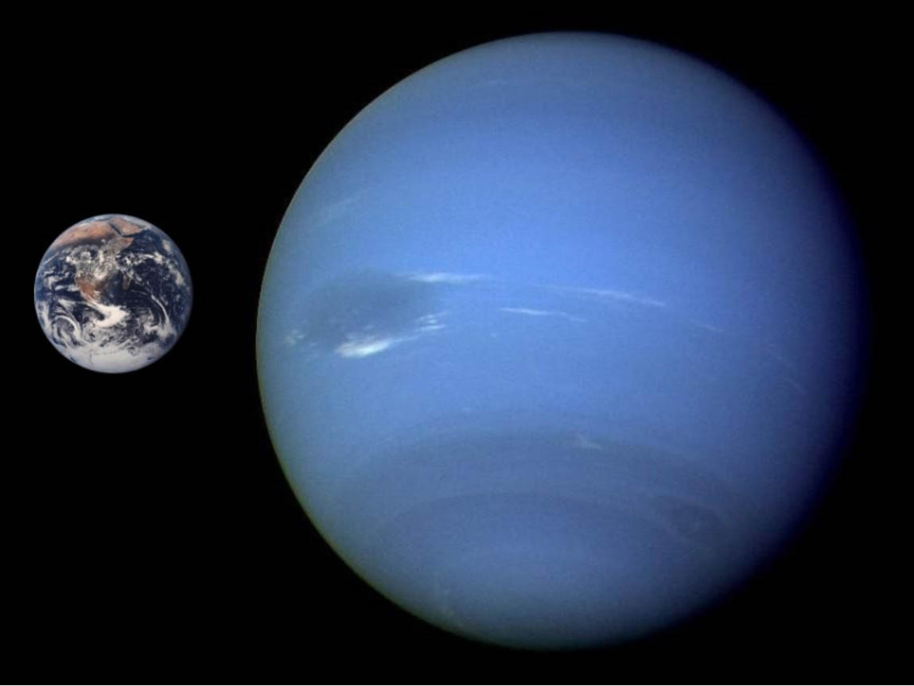
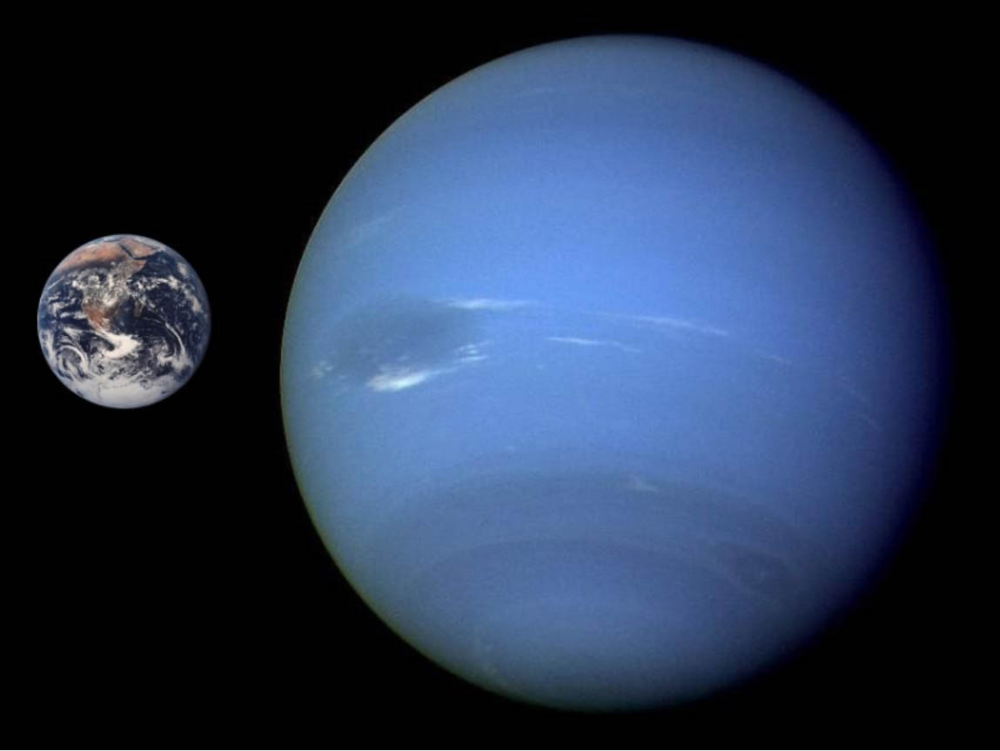

Нептун является восьмой планетой от Солнца и последней из известных планет. Не смотря на то, что это третья по массивности планета, она является всего лишь четвертой с точки зрения диаметра. Благодаря своей синей окраске Нептун получил имя римского бога моря. По мере совершения тех или иных научных открытий у ученых часто возникают споры, какая именно из теорий заслуживает доверия. Открытие Нептуна является наглядным примером таких разногласий. Нептун и другие планеты Солнечной системы Нептун и другие планеты Солнечной системы После того, как 1781 году была открыта планета Уран, астрономы заметили, что его орбита подвержена значительным колебаниям, которых в принципе быть не должно. В качестве обоснования этого непонятного явления была предложена гипотеза о существовании планеты, гравитационное поле которой и вызывает орбитальные отклонения Урана. Сравните: Земля, Уран, Нептун, Плутон Сравните: Земля, Уран, Нептун, Плутон Тем не менее, первые научные труды, связанные с существования Нептуна появились только в 1845-1846 году, когда английский астроном Джон Коуч Адамс опубликовал свои расчеты о положении этой тогда еще неизвестной планеты. Однако, несмотря на то, что он предоставил свою работу Королевскому научному сообществу (ведущей английской научно-исследовательской организации), его труд не вызвал ожидаемого интереса. И только год спустя французский астроном Жан Жозеф Леверье также представил расчеты, которые были поразительно похожи на расчеты Адамса. В результате независимых оценок научной работы двух ученых, научное сообщество наконец-то согласилось с их выводами и начало поиски планеты в области неба, на которую указывали исследования Адамс и Леверье. Планета как таковая была обнаружена 23 сентября 1846 года немецким астрономом Иоганном Галлом. До облета космическим аппаратом Voyager 2 в 1989 году, о планете Нептун у человечества было очень мало информации. Миссия позволила получить данные о кольцах Нептуна, числе лун, атмосфере и вращении. Кроме того, Voyager 2 выявил существенные особенности спутника Нептуна под названием Тритон. На сегодняшний день мировые космические агентства не планируют каких-либо миссий к этой планете.